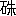
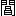

「――
黄大癡といえば、大癡の
秋山図をご
覧になったことがありますか？」
ある秋の
夜、
甌香閣を
訪ねた
王石谷は、主人の
 南田
南田と茶を
啜りながら、話のついでにこんな問を発した。
「いや、見たことはありません。あなたはご覧になったのですか？」
大癡老人
黄公望は、
梅道人や
黄鶴山樵とともに、
元朝の
画の
神手である。
南田はこう言いながら、かつて見た
沙磧図や
富春巻が、
髣髴と眼底に浮ぶような気がした。
「さあ、それが見たと言って
好いか、見ないと言って好いか、不思議なことになっているのですが、――」
「見たと言って好いか、見ないと言って好いか、――」
南田は
訝しそうに、王石谷の顔へ
眼をやった。
「
模本でもご覧になったのですか？」
「いや、模本を見たのでもないのです。とにかく
真蹟は見たのですが、――それも
私ばかりではありません。この秋山図のことについては、
煙客先生（
王時敏）や
廉州先生（
王鑑）も、それぞれ
因縁がおありなのです」
王石谷はまた茶を啜った
後、
考深そうに微笑した。
「ご退屈でなければ話しましょうか？」
「どうぞ」
南田は
銅檠の火を掻き立ててから、
慇懃に客を促した。
＊ ＊ ＊
元宰先生（
董其昌）が
在世中のことです。ある年の秋先生は、
煙客翁と画論をしている内に、ふと翁に、
黄一峯の秋山図を見たかと尋ねました。翁はご承知のとおり画事の上では、大癡を
宗としていた人です。ですから大癡の画という画はいやしくも
人間にある限り、
看尽したと言ってもかまいません。が、その秋山図という画ばかりは、ついに見たことがないのです。
「いや、見るどころか、名を聞いたこともないくらいです」
煙客翁はそう答えながら、妙に
恥しいような気がしたそうです。
「では機会のあり次第、ぜひ一度は見ておおきなさい。
夏山図や
浮嵐図に比べると、また一段と
出色の作です。おそらくは
大癡老人の諸本の中でも、
白眉ではないかと思いますよ」
「そんな傑作ですか？ それはぜひ見たいものですが、いったい誰が持っているのです？」
「
潤州の
張氏の家にあるのです。
金山寺へでも行った時に、門を
叩いてご
覧なさい。
私が紹介状を書いて上げます」
煙客翁は先生の手簡を
貰うと、すぐに潤州へ出かけて行きました。何しろそういう妙画を蔵している家ですから、そこへ行けば
黄一峯の
外にも、まだいろいろ歴代の
墨妙を見ることができるに違いない。――こう思った煙客翁は、もう一刻も
西園の書房に、じっとしていることはできないような、落着かない気もちになっていたのです。
ところが潤州へ来て
観ると、楽みにしていた張氏の家というのは、なるほど構えは広そうですが、いかにも荒れ果てているのです。
墻には
蔦が
絡んでいるし、庭には草が茂っている。その中に
鶏や
家鴨などが、客の来たのを珍しそうに眺めているという始末ですから、さすがの翁もこんな家に、大癡の名画があるのだろうかと、一時は
元宰先生の言葉が疑いたくなったくらいでした。しかしわざわざ尋ねて来ながら、
刺も通ぜずに帰るのは、もちろん
本望ではありません。そこで取次ぎに出て来た
小厮に、ともかくも黄一峯の秋山図を拝見したいという、遠来の意を伝えた
後、
思白先生が書いてくれた紹介状を渡しました。
すると間もなく煙客翁は、
庁堂へ案内されました。ここも
紫檀の
椅子机が、清らかに並べてありながら、冷たい
埃の
臭いがする、――やはり
荒廃の気が
鋪甎の上に、漂っているとでも言いそうなのです。しかし幸い出て来た主人は、病弱らしい顔はしていても、人がらの悪い人ではありません。いや、むしろその
蒼白い顔や
華奢な手の恰好なぞに、貴族らしい品格が見えるような人物なのです。翁はこの主人とひととおり、初対面の
挨拶をすませると、早速名高い黄一峯を見せていただきたいと言いだしました。何でも翁の話では、その名画がどういう訳か、今の内に急いで見ておかないと、霧のように消えてでもしまいそうな、迷信じみた気もちがしたのだそうです。
主人はすぐに
快諾しました。そうしてその庁堂の
素壁へ、
一幀の
画幅を
懸けさせました。
「これがお望みの秋山図です」
煙客翁はその
画を一目見ると、思わず
驚嘆の声を洩らしました。
画は
青緑の
設色です。
渓の水が
委蛇と流れたところに、村落や
小橋が散在している、――その上に起した主峯の腹には、ゆうゆうとした秋の雲が、
蛤粉の濃淡を重ねています。山は
高房山の
横点を重ねた、
新雨を経たような
翠黛ですが、それがまた
を点じた、
所々の
叢林の
紅葉と映発している美しさは、ほとんど何と形容して
好いか、言葉の着けようさえありません。こういうとただ
華麗な画のようですが、
布置も雄大を尽していれば、
筆墨も
渾厚を
極めている、――いわば
爛然とした色彩の
中に、
空霊澹蕩の古趣が
自ら
漲っているような画なのです。
煙客翁はまるで放心したように、いつまでもこの画を見入っていました。が、画は見ていれば見ているほど、ますます神妙を加えて行きます。
「いかがです？ お気に入りましたか？」
主人は微笑を含みながら、
斜に翁の顔を眺めました。
「
神品です。
元宰先生の絶賞は、たとい及ばないことがあっても、過ぎているとは言われません。実際この図に比べれば、
私が今までに見た諸名本は、ことごとく
下風にあるくらいです」
煙客翁はこういう
間でも、
秋山図から眼を放しませんでした。
「そうですか？ ほんとうにそんな傑作ですか？」
翁は思わず主人のほうへ、驚いた眼を転じました。
「なぜまたそれがご不審なのです？」
「いや、別に不審という訳ではないのですが、実は、――」
主人はほとんど
処子のように、当惑そうな顔を赤めました。が、やっと寂しい微笑を洩すと、おずおず壁上の名画を見ながら、こう言葉を続けるのです。
「実はあの画を眺めるたびに、
私は何だか眼を明いたまま、夢でも見ているような気がするのです。なるほど
秋山は美しい。しかしその美しさは、私だけに見える美しさではないか？ 私以外の人間には、平凡な
画図に過ぎないのではないか？――なぜかそういう疑いが、始終私を悩ませるのです。これは私の気の迷いか、あるいはあの画が世の中にあるには、あまり美し過ぎるからか、どちらが原因だかわかりません。が、とにかく妙な気がしますから、ついあなたのご賞讃にも、念を押すようなことになったのです」
しかしその時の煙客翁は、こういう主人の弁解にも、格別心は止めなかったそうです。それは何も秋山図に、
見惚れていたばかりではありません。翁には主人が
徹頭徹尾、
鑑識に
疎いのを隠したさに、
胡乱の言を並べるとしか、受け取れなかったからなのです。
翁はそれからしばらくの
後、この廃宅同様な
張氏の家を辞しました。
が、どうしても忘れられないのは、あの眼も覚めるような
秋山図です。実際
大癡の
法燈を継いだ
煙客翁の身になって見れば、何を捨ててもあれだけは、手に入れたいと思ったでしょう。のみならず翁は
蒐集家です。しかし家蔵の墨妙の
中でも、
黄金二十
鎰に換えたという、
李営丘の
山陰泛雪図でさえ、秋山図の神趣に比べると、
遜色のあるのを
免れません。ですから翁は蒐集家としても、この
稀代の
黄一峯が欲しくてたまらなくなったのです。
そこで
潤州にいる
間に、翁は人を張氏に
遣わして、秋山図を譲ってもらいたいと、何度も交渉してみました。が、張氏はどうしても、翁の相談に応じません。あの
顔色の
蒼白い主人は、使に立ったものの話によると、「それほどこの画がお気に入ったのなら、喜んで先生にお貸し申そう。しかし手離すことだけは、ごめん
蒙りたい」と言ったそうです。それがまた気を負った煙客翁には、多少
癇にも
障りました。何、今貸してもらわなくても、いつかはきっと手に入れてみせる。――翁はそう心に
期しながら、とうとう秋山図を残したなり、潤州を去ることになりました。
それからまた一年ばかりの
後、煙客翁は潤州へ来たついでに、張氏の家を訪れてみました。すると
墻に
絡んだ
蔦や庭に茂った草の色は、以前とさらに変りません。が、取次ぎの
小厮に聞けば、主人は不在だということです。翁は主人に会わないにしろ、もう一度あの秋山図を見せてもらうように頼みました。しかし何度頼んでみても、小厮は主人の
留守を
楯に、
頑として奥へ通しません。いや、しまいには門を
鎖したまま、返事さえろくにしないのです。そこで翁はやむを得ず、この荒れ果てた家のどこかに、蔵している名画を想いながら、
惆悵と
独り帰って来ました。
ところがその
後元宰先生に会うと、先生は翁に
張氏の家には、大癡の秋山図があるばかりか、
沈石田の
雨夜止宿図や
自寿図のような傑作も、残っているということを告げました。
「前にお話するのを忘れたが、この二つは秋山図同様、
※苑［＃「糸＋貴」、174-下-19］の奇観とも言うべき作です。もう一度私が手紙を書くから、ぜひこれも見ておおきなさい」
煙客翁はすぐに張氏の家へ、急の使を立てました。使は元宰先生の
手札の
外にも、それらの名画を
購うべき
 金
金を授けられていたのです。しかし張氏は前のとおり、どうしても
黄一峯だけは、手離すことを
肯じません。翁はついに
秋山図には意を絶つより
外はなくなりました。
＊ ＊ ＊
王石谷はちょいと口を
噤んだ。
「これまでは
私が
煙客先生から、聞かせられた話なのです」
「では煙客先生だけは、たしかに秋山図を見られたのですか？」
南田は
髯を
撫しながら、念を押すように王石谷を見た。
「先生は見たと言われるのです。が、たしかに見られたのかどうか、それは誰にもわかりません」
「しかしお話の
容子では、――」
「まあ先をお
聴きください。しまいまでお聴きくだされば、また
自ら
私とは違ったお考が出るかもしれません」
王石谷は今度は茶も
啜らずに、
 々
々と話を続けだした。
＊ ＊ ＊
煙客翁が
私にこの話を聴かせたのは、始めて秋山図を見た時から、すでに五十年近い
星霜を経過した
後だったのです。その時は
元宰先生も、とうに
物故していましたし、
張氏の家でもいつの
間にか、三度まで代が変っていました。ですからあの秋山図も、今は誰の家に蔵されているか、いや、
未に
亀玉の
毀れもないか、それさえ我々にはわかりません。煙客翁は手にとるように、秋山図の霊妙を話してから、残念そうにこう言ったものです。
「あの黄一峯は
公孫大嬢の
剣器のようなものでしたよ。筆墨はあっても、筆墨は見えない。ただ何とも言えない
神気が、ただちに心に迫って来るのです。――ちょうど
龍翔の
看はあっても、人や
剣が我々に見えないのと同じことですよ」
それから
一月ばかりの
後、そろそろ
春風が動きだしたのを
潮に、私は独り南方へ、旅をすることになりました。そこで
翁にその話をすると、
「ではちょうど
好い機会だから、
秋山を尋ねてご
覧なさい。あれがもう一度世に出れば、
画苑の
慶事ですよ」と言うのです。
私ももちろん望むところですから、早速翁を
煩わせて、手紙を一本書いてもらいました。が、さて
遊歴の
途に上ってみると、何かと行く所も多いものですから、容易に
潤州の張氏の家を訪れる
暇がありません。私は翁の書を
袖にしたなり、とうとう
子規が
啼くようになるまで、
秋山を尋ねずにしまいました。
その内にふと耳にはいったのは、
貴戚の
王氏が秋山図を手に入れたという
噂です。そういえば
私が遊歴中、
煙客翁の書を見せた人には、王氏を知っているものも
交っていました。王氏はそういう人からでも、あの秋山図が、
張氏の家に蔵してあることを知ったのでしょう。何でも
坊間の説によれば、張氏の孫は
王氏の使を受けると、伝家の
彝鼎や法書とともに、すぐさま
大癡の秋山図を献じに来たとかいうことです。そうして王氏は喜びのあまり、張氏の孫を上座に招じて、
家姫を出したり、音楽を奏したり、盛な
饗宴を催したあげく、千金を
寿にしたとかいうことです。私はほとんど
雀躍しました。
滄桑五十載を
閲した
後でも、秋山図はやはり無事だったのです。のみならず私も面識がある、王氏の手中に入ったのです。昔は煙客翁がいくら苦心をしても、この図を再び
看ることは、
鬼神が
悪むのかと思うくらい、ことごとく失敗に終りました。が、今は王氏の
焦慮も待たず、自然とこの図が我々の前へ、
蜃楼のように現れたのです。これこそ実際天縁が、熟したと言う
外はありません。私は取る物も取りあえず、
金にある王氏の
第宅へ、秋山を見に出かけて行きました。
今でもはっきり覚えていますが、それは王氏の庭の
牡丹が、
玉欄の
外に咲き誇った、風のない初夏の
午過ぎです。私は王氏の顔を見ると、
揖もすますかすまさない内に、思わず笑いだしてしまいました。
「もう秋山図はこちらの物です。煙客先生もあの図では、ずいぶん苦労をされたものですが、今度こそはご安心なさるでしょう。そう思うだけでも愉快です」
王氏も得意満面でした。
「
今日は煙客先生や
廉州先生も来られるはずです。が、まあ、お出でになった順に、あなたから見てもらいましょう」
王氏は早速かたわらの壁に、あの秋山図を
懸けさせました。水に臨んだ
紅葉の村、谷を
埋めている
白雲の
群、それから
遠近に
側立った、
屏風のような数峯の
青、――たちまち私の眼の前には、大癡老人が造りだした、天地よりもさらに霊妙な小天地が浮び上ったのです。私は胸を
躍らせながら、じっと壁上の画を眺めました。
この
雲煙邱壑は、
紛れもない
黄一峯です、
癡翁を除いては
何人も、これほど
皴点を加えながら、しかも墨を
活かすことは――これほど
設色を重くしながら、しかも筆が隠れないことは、できないのに違いありません。しかし――しかしこの秋山図は、昔一たび煙客翁が張氏の家に見たという図と、たしかに別な
黄一峯です。そうしてその
秋山図よりも、おそらくは下位にある黄一峯です。
私の周囲には王氏を始め、座にい合せた
食客たちが、私の
顔色を
窺っていました。ですから私は失望の色が、
寸分も顔へ
露われないように、気を使う必要があったのです。が、いくら努めてみても、どこか不服な表情が、我知らず外へ出たのでしょう。王氏はしばらくたってから、心配そうに私へ声をかけました。
「どうです？」
私は
言下に答えました。
「神品です。なるほどこれでは
煙客先生が、
驚倒されたのも不思議はありません」
王氏はやや顔色を直しました。が、それでもまだ
眉の間には、いくぶんか私の
賞讃に、不満らしい
気色が見えたものです。
そこへちょうど来合せたのは、私に秋山の神趣を説いた、あの煙客先生です。翁は王氏に
会釈をする
間も、嬉しそうな微笑を浮べていました。
「五十年
前に秋山図を見たのは、荒れ果てた張氏の家でしたが、
今日はまたこういう
富貴のお宅に、再びこの図とめぐり合いました。まことに意外な因縁です」
煙客翁はこう言いながら、壁上の
大癡を仰ぎ見ました。この秋山がかつて翁の見た秋山かどうか、それはもちろん誰よりも翁自身が明らかに知っているはずです。ですから私も王氏同様、翁がこの図を眺める
容子に、注意深い眼を注いでいました。すると
果然翁の顔も、みるみる曇ったではありませんか。
しばらく沈黙が続いた
後、王氏はいよいよ不安そうに、おずおず翁へ声をかけました。
「どうです？ 今も
石谷先生は、たいそう
褒めてくれましたが、――」
私は正直な煙客翁が、
有体な返事をしはしないかと、内心
冷や
冷やしていました。しかし王氏を失望させるのは、さすがに翁も気の毒だったのでしょう。翁は秋山を見終ると、
叮嚀に王氏へ答えました。
「これがお手にはいったのは、あなたのご運が
好いのです。ご
家蔵の
諸宝もこの
後は、一段と光彩を添えることでしょう」
しかし王氏はこの言葉を聞いても、やはり顔の
憂色が、ますます深くなるばかりです。
その時もし
廉州先生が、
遅れ
馳せにでも来なかったなら、我々はさらに気まずい思いをさせられたに違いありません。しかし先生は幸いにも、煙客翁の賞讃が渋りがちになった時、快活に一座へ加わりました。
「これがお話の秋山図ですか？」
先生は
無造作な
挨拶をしてから、
黄一峯の
画に対しました。そうしてしばらくは
黙然と、
口髭ばかり
噛んでいました。
「
煙客先生は五十年
前にも、一度この図をご覧になったそうです」
王氏はいっそう気づかわしそうに、こう説明を加えました。
廉州先生はまだ翁から、一度も
秋山の
神逸を聞かされたことがなかったのです。
「どうでしょう？ あなたのご
鑑裁は」
先生は
歎息を洩らしたぎり、
不相変画を眺めていました。
「ご遠慮のないところを
伺いたいのですが、――」
王氏は無理に微笑しながら、再び先生を促しました。
「これですか？ これは――」
廉州先生はまた口を
噤みました。
「これは？」
「これは
癡翁第一の名作でしょう。――この雲煙の濃淡をご覧なさい。元気
淋漓じゃありませんか。林木なぞの
設色も、まさに
天造とも称すべきものです。あすこに遠峯が一つ見えましょう。全体の
布局があのために、どのくらい
活きているかわかりません」
今まで黙っていた廉州先生は、王氏のほうを
顧みると、いちいち画の
佳所を指さしながら、
盛に感歎の声を
挙げ始めました。その言葉とともに王氏の顔が、だんだん晴れやかになりだしたのは、申し上げるまでもありますまい。
私はその
間に煙客翁と、ひそかに顔を見合せました。
「先生、これがあの秋山図ですか？」
私が小声にこう言うと、煙客翁は頭を振りながら、妙な
瞬きを一つしました。
「まるで万事が夢のようです。ことによるとあの
張家の主人は、
狐仙か何かだったかもしれませんよ」
＊ ＊ ＊
「秋山図の話はこれだけです」
王石谷は語り終ると、おもむろに一碗の茶を
啜った。
「なるほど、不思議な話です」
南田は、さっきから
銅檠の
焔を眺めていた。
「その
後王氏も熱心に、いろいろ
尋ねてみたそうですが、やはり癡翁の秋山図と言えば、あれ以外に張氏も知らなかったそうです。ですから昔煙客先生が見られたという秋山図は、今でもどこかに隠れているか、あるいはそれが先生の記憶の間違いに過ぎないのか、どちらとも私にはわかりません。まさか先生が張氏の家へ、秋山図を見に行かれたことが、全体
幻でもありますまいし、――」
「しかし
煙客先生の心の
中には、その怪しい秋山図が、はっきり残っているのでしょう。それからあなたの心の
中にも、――」
「山石の青緑だの紅葉の
の色だのは、今でもありあり見えるようです」
「では秋山図がないにしても、
憾むところはないではありませんか？」
王の両大家は、
掌を
拊って一笑した。